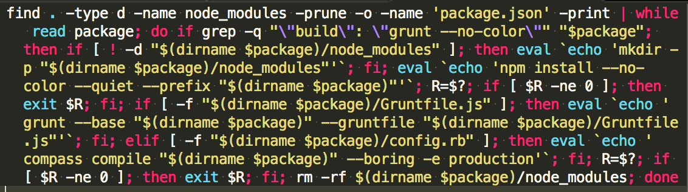

Automate all teh things with task runners
Attila Beregszaszi
08/04/2015
Integration
1. Basic integration
add package.json and Gruntfile.js to your projects
$ tree my_basic_project
my_basic_project/
├── .gitignore
├── Gruntfile.js
├── dist
│ ├── build.js
│ └── build.min.js
├── package.json
├── src
│ ├── src.js
│ ├── src-2.js
└── tests
└── my_test_spec.js
What is in .gitignore?
-
Only
node_modules -
package.jsonandGruntfile.jsremain versioned together withdist/
DEMO
One caveat
Make sure you run the build before every commit
or at least every commit in a branch meant for production
2. Integration with build systems
-
add
package.jsonandGruntfile.jsto your projects -
ignore build output
drupal_site/
├── .gitignore
├── Gruntfile.js
├── package.json
├── modules
├── themes
│ ├── base
│ │ ├── js
│ │ ├── sass
│ │ └── templates
│ ├── site
│ │ ├── js
│ │ ├── sass
│ │ └── templates
├── .gitignore
└── site.make
What's ignored?
-
node_modules -
sass-extensions -
css
We expect to run grunt every time a build runs
we build starting with a clean workspace
We have this "one-liner" as a Jenkins/Capistrano build step:
